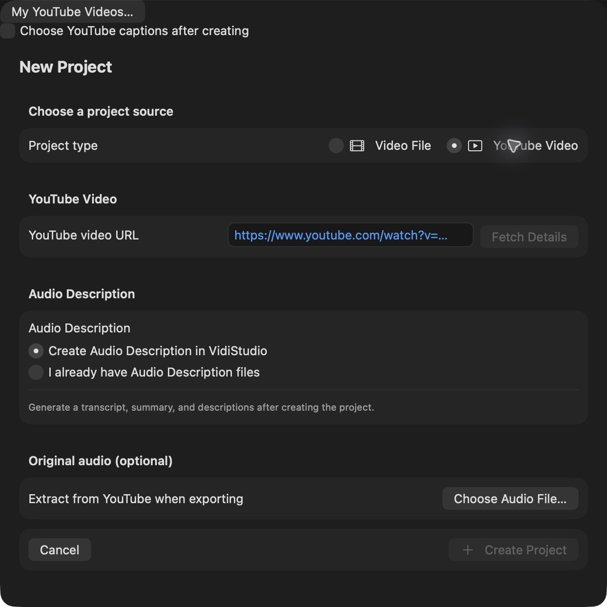
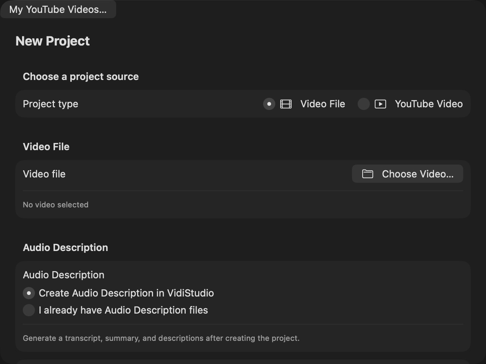
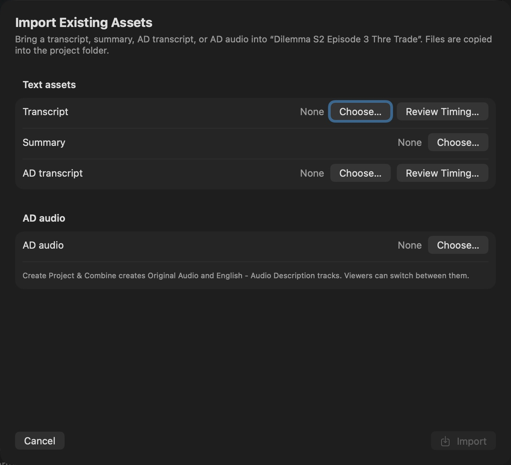
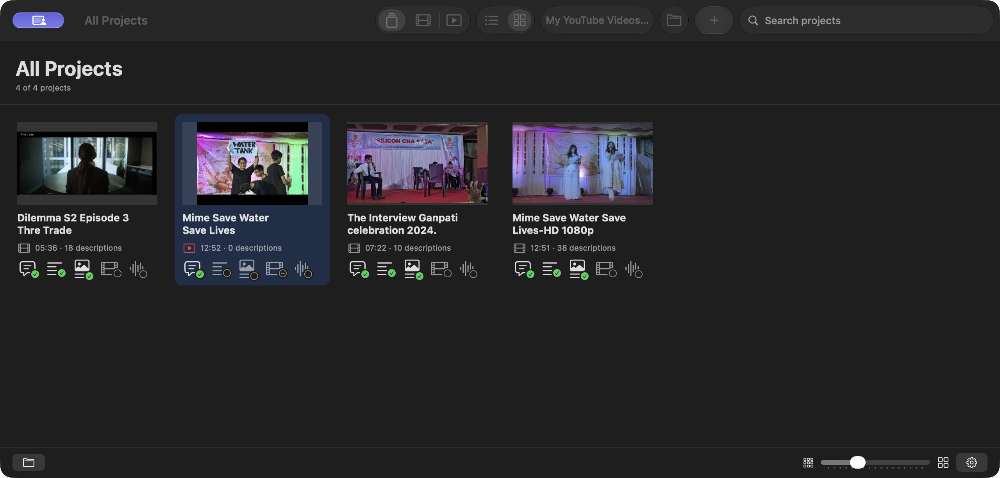

New Project (Command-N on Mac / Ctrl-N on Windows) offers Video File and YouTube Video. Local video project creation does not require a Gemini API key; you can choose any supported video file or import existing assets without one. YouTube project creation also works without a key. YouTube creation requires internet access to YouTube; Gemini is checked when AI analysis is requested. For a file, use Choose Video and then Create Project; the source is copied into the local project. Local video files may be up to 2 GB. VidiStudio checks the size when you choose the file and does not create a project for a larger video; choose a smaller file or use a YouTube project instead. For YouTube, paste a watch URL or copied short link and choose Fetch Details. Review the fetched project name, thumbnail, and canonical URL, then choose Create Project. The YouTube video must be available with its visibility set to Public or Unlisted. Private and every other restricted YouTube visibility setting are not supported. YouTube details must be fetched successfully before a project can be created. Gemini analysis is configured and requested separately. The preview image is temporary and is held only in memory. Changing the link clears it and requires another fetch; no thumbnail file is stored locally until you choose Create Project. The created project stores the URL and downloads its own thumbnail into the local project folder, then plays the video inside VidiStudio without downloading or copying the YouTube video itself. YouTube playback and analysis need an internet connection. Final combined-video export is unavailable for YouTube projects, but their text, original audio, narration-only audio, and complete described audio can be exported. The combined audio export uses the selected original soundtrack and generated or imported narration, or uses a full AD mix directly.

New Project offers two Audio Description modes: Create Audio Description in VidiStudio and I already have Audio Description files. The second mode reveals Transcript, Summary, AD transcript, and AD audio for local or YouTube projects. YouTube projects also offer an independent optional original-audio file. You can add the same assets to an existing project later from Project > Import > Import Existing Assets… or the import button in the editor toolbar. That sheet is titled Import Existing Assets and offers Import, plus Import & Combine when AD audio is selected; YouTube combination creates described audio.
Accepted formats are SRT, VTT, or TXT for Transcript and AD transcript; Markdown (.md or .markdown) or TXT for Summary; and WAV, MP3, M4A, AAC, or FLAC for AD audio. Text files must be UTF-8 and smaller than 20 MB. Importing an accepted file copies it into the project folder; the original remains where it is.
For an AD transcript, choose its type. AD narration only creates editable Audio Description segments and checks them against the transcript, so a transcript must exist or be imported in the same operation. Dialogue + AD combined keeps the file as one combined caption and export track; it is not split into editable descriptions. For AD audio, choose AD narration audio only to mix it with the original soundtrack while the original is ducked under speech, or Full AD mix to use the file directly as the described track while the original soundtrack remains available. YouTube projects accept original audio, AD narration, and full AD mixes; Import & Combine creates described audio for these projects.
Create Project & Open Editor creates the project and imports the selected text and audio. Create Project & Combine appears when AD audio is selected. For YouTube projects it creates described audio. For local video it creates two audio tracks, Original Audio (the default) and Audio Description in the selected language (flagged for viewers with a visual impairment). Closed description is the default result: viewers can switch tracks. An open, single described mix is an explicit export choice. If the source video has no audio track, no silent Original Audio track is created; the described track is the only default track.
Timing is validated for SRT, VTT, and TXT transcript and AD narration imports. TXT files must be reviewed in the timing editor before importing. SRT and VTT keep their existing times but are checked for invalid or out-of-video rows, transcript-row overlaps, and AD overlaps with dialogue or other descriptions; if problems are found, a Timing Warnings dialog offers Import Anyway, Review Timing…, or Cancel. Review Timing opens the same editor with the parsed times prefilled, and Save Timing requires every row to end after it starts, remain inside the video, and not overlap the previous row. After a transcript or AD narration import completes, the Import Report offers Edit Transcript Timings… so rows can be corrected without re-importing. Flagged AD rows remain imported and are marked Needs retiming.
Every completed import produces an Import Report. It shows how many rows were imported, how many descriptions are flagged for retiming, how many rows ended after the video, how many were invalid or empty, and the reason for each omitted source line. Valid rows are imported; invalid or out-of-duration rows are omitted rather than guessed. Rows in a transcript import that overlap an earlier transcript row are omitted. Audio Description overlaps are flagged instead of moved or deleted. If no row passes validation, the existing transcript, summary, descriptions, and audio are left unchanged and the report still explains why nothing was imported. Use Review Descriptions or Review Transcript from the report to fix the affected content.
Flagged timing stays attached to the project. A persistent banner reads Description timing needs attention, reports the number of segments that overlap dialogue or another description, and offers Review Descriptions and, when available, Import Report. Each affected description row shows an Overlap badge, and AD Overview adds the same count under Description timing. Described video, described audio, narration-only audio, and audio combining remain blocked until the timing is resolved. Text exports remain available, and no description text is changed automatically.
The import dialog includes the same Language picker, initially set to the project language. It assigns a label and preserves the supplied text; importing does not translate it. Auto imports are stored in Auto. Importing another result in the same language creates an alternative for review with Keep Both, Replace Selected, and Discard New. Imported AD transcripts retain their related source information; imported AD audio and per-segment narration retain their own files. Existing exports remain available.
VidiStudio integrates directly into both macOS Finder and Windows File Explorer, allowing you to open video files and create new projects directly from your operating system without opening the app first:
script/register-context-menu.ps1.On both platforms, opening or sharing a video immediately creates a new project and launches its editor. If you open or share a video that has already been imported into an existing project, VidiStudio automatically brings that existing project window to the foreground instead of creating a duplicate.

All Projects shows projects from the configured library and project folders opened directly. Type part of a name in Search all projects, and use the source filter to show All projects, only local Video File projects, or only YouTube projects. VoiceOver names these filter buttons All Projects, Local Video Projects, and YouTube Projects. A film icon marks local video files and a red play icon marks YouTube videos in both views. Use List View or Grid View to change presentation. List View is a table with columns for project name, duration, AD segment count, transcript, summary, AD, video exports, and narration-audio exports. Grid View shows the same generated-content indicators on every project card. A green check means generated, an outlined circle means not generated, and a blocked badge means the item is unavailable, such as video export for a YouTube project. Move the pointer over an indicator or navigate to it with VoiceOver for its full status and export count. In Grid View, the Project icon size slider changes tile size and is remembered.
A single click selects a project. Double-click it or choose Open Project from its contextual menu to open it in its own window. Opening an already-open project activates that editor. Different projects can remain open together. Use the editor window's standard red Close button when finished; closing does not delete the project.
Right-click a project and open Analysis. Generate or Regenerate Metadata & Thumbnails refreshes only technical video details and thumbnail images without AI. Analyze Video creates the transcript, summary, and Audio Description text in order. The same menu also provides Generate or Regenerate Transcript, Summary, and Audio Descriptions as individual stages. Same-language regeneration creates an alternative for review before any replacement. Export always acts on the project you clicked and opens one two-column dialog. Select Video, Audio, Text, or Web Playback on the left and configure the available choices on the right. Video and Web Playback combine original, closed-description, or open-description audio with no transcript, Transcript, or AD Transcript as closed or open captions. Web Playback creates a complete HLS folder for Video.js. Video offers MKV (default), MP4, MOV, and M4V in Format. Audio offers WAV (default), MP3, and M4A for original, combined, or narration-only content. Text exports generated content in the selected format. YouTube projects omit Video and Web Playback. Their Audio choices, in order, are YouTube Audio Only, Narration Audio Only, and YouTube Audio with Narration; text remains available when generated.
After you save an export, All Projects shows a banner with the project name, a spinning indicator, live status, and Cancel Export. The banner disappears when the export finishes or stops.
Select a project and press Return to rename it, or choose Rename from its contextual menu. Choose Open Project Folder to open an existing VidiStudio project folder, not an ordinary video file. To import a new video, use New Project instead. At the bottom of All Projects, the folder icon opens the selected project in Finder and the Settings gear is on the right. The selected-project folder button remains available while an export or another project operation is running. The editor inspector uses the same bottom-left folder and bottom-right Settings arrangement.
VidiStudio checks the files in a project when it opens and while its editor is open, so files removed or emptied in Finder are noticed without restarting. A compact attention banner at the top of the editor summarizes the problem and offers Review Issues…, which opens a dialog with the project name, every missing file, its impact, and recovery guidance. Missing narration audio, timeline pictures, exports, or video details are recoverable: use Regenerate Missing Narration, Regenerate Video Details & Pictures, or Export again. These deletions do not mark the project as damaged, and your transcript, summary, descriptions, and settings remain safe in project.json.
If project.json or the original source video for a local project is missing, empty, or unreadable, the project is marked as Damaged and a red warning replaces the editor content or appears above it. The same happens when a significant portion of the project’s files is gone. The warning names the missing files and offers Delete Project…, which moves the entire remaining project folder to the Trash. All Projects also marks affected projects with a Damaged or Files Missing badge. If the project folder itself was removed, the open editor offers to remove the missing project entry from VidiStudio. When more than one issue is found, a warning icon appears beside Project Information in the inspector; choose it, or choose Review Issues… in the banner, to open the complete issue list in the project-named dialog. The dialog lists each problem on its own card and keeps the viewer, timeline, and thumbnails at their normal size.
Copy the entire project folder when backing up or transferring a project. Keep the project metadata, source media, narration, thumbnails, and other generated files together so relative paths remain valid. App settings and your API key are stored separately on this Mac. Project playback preferences are remembered on this Mac by project identity.
Closing an editor removes its entry from Settings > Projects, while preserving its Narration and Follow choices for reopening. Delete Project opens a confirmation describing what will be removed, then moves the complete project folder to the Mac Trash only when you choose the destructive action. You can recover it until the Trash is emptied. Choosing content to delete removes selected generated components without deleting the whole project and also requires confirmation. Choose Cancel to keep the project or components unchanged, and keep a backup of work you want to preserve.
You can choose an original audio file in New Project whether you plan to generate descriptions or import existing assets. Accepted audio formats are WAV, MP3, M4A, AAC, and FLAC. Choose Use for exports only or Use for playback and exports. Choose YouTube video or the chosen audio file for transcription separately. You can change these choices later through Audio Sources in the editor.
Project > Import offers Import Original Audio, Import AD Audio, and Import Existing Assets. Original audio is the video soundtrack; AD audio is narration or a complete described mix. Accepted files are copied into the project folder, so the project remains portable. Removing a selection does not delete your external file.
Choose File > My YouTube Videos, or My YouTube Videos beside New Project. Open YouTube Accounts to add Google accounts. Sign-in opens your browser and asks for profile, channel, and caption access. You can keep several accounts connected. The account selector shows the Google account and the YouTube channel separately. Settings > YouTube Accounts also lets you switch accounts, sign out locally, or disconnect Google access. Disconnecting revokes this Google account’s access across VidiStudio connections and computers; you may need to sign in again elsewhere.
Choose All uploads or a playlist. Playlist information includes its description, visibility, publication date, and video count when available. Use Load More Playlists and Load More Videos to retrieve further pages. Search, visibility filters, and sorting by newest, oldest, title, duration, or views apply to the videos already loaded. Public, unlisted, and private videos remain visible in your account list. Opening an existing video returns to its local project; opening a new one creates its project.
Public and unlisted videos use the same workflow. Visibility is shown with the video details. Private videos cannot be opened for Gemini processing; signing in to Google does not give Gemini access. Import your original local video instead. Live, upcoming, processing, deleted, and inaccessible videos show an appropriate availability message. A signed-out pasted link uses the YouTube Data API for details and duration; it does not connect a Google account.
In the editor choose Project > YouTube > Video Details, Refresh YouTube Details, or Import YouTube Captions. Details show available video information and view, like, and comment counts. Missing values are marked unavailable. To import captions, choose a connected account that can edit the video, request tracks, then choose a language and a ready track. Automatic captions are identified. YouTube may refuse a download even when captions are visible in its player.
For a YouTube project, Project > Import > Import Transcript and Import Existing Assets also offer Download YouTube Captions beside transcript selection. The Transcript tab’s import action opens the same dialog. Choose a connected caption account, load tracks, and select a ready language/track. The download becomes the selected SRT transcript; other chosen assets remain selected. Confirm Import to validate timing and save a language-specific result for review. Cancel leaves the saved transcript unchanged. Loading tracks and downloading captions show a spinner and status message. Tracks with overlapping or invalid timing require Review Timing before import. Selecting a local transcript file instead removes the pending YouTube provenance. A failed or denied download keeps the previous selection and existing project content.
The chosen captions become an editable local transcript with their original timing and a visible YouTube captions source label. Confirm before replacing an existing transcript. Invalid or overlapping caption timing keeps your existing transcript. Analyze Video continues from an imported caption transcript; explicitly regenerate the transcript if you want to replace it with Gemini output. Review description timing after replacement. Importing does not change captions on YouTube.
Delete Stored YouTube Data in Video Details removes fetched details, downloaded caption copies, imported YouTube caption rows including edits to those rows, and transcript history for this project. Other manually authored rows remain. Nothing is deleted on YouTube. Sign Out removes the local connection; it does not erase project content.
The YouTube menu contains My YouTube Videos, YouTube Accounts, Open in Editor, Open in YouTube, Refresh Videos, Load More Videos, and Load More Playlists. Select a video row to use the opening commands. Open in Editor creates or reopens the local project and opens its editor; Open in YouTube opens the original video in your default browser, including private videos you can access on YouTube. Each row also offers both actions and a context menu.
On Mac: My YouTube Videos uses Command-Option-Y; YouTube Accounts uses Command-Option-Shift-Y; Open in Editor uses Command-Return; Open in YouTube uses Command-Shift-Return; Refresh Videos uses Command-R; Load More Videos uses Command-Option-L; Load More Playlists uses Command-Option-Shift-L. On Windows replace Command with Ctrl and Option with Alt. Video actions, refresh, and loading shortcuts are active in the YouTube browser and follow the same availability rules as the menus.
A spinning progress indicator and a short status appear in the video list while videos or playlists load. Load More Videos and Load More Playlists also show a spinner in the active button while retrieving another page. Existing results stay visible while loading more. Progress clears when the request finishes, fails, or is cancelled. Loading is indeterminate; no percentage is estimated.
Every YouTube project shows a YouTube Information section in the editor inspector, alongside its local project name, folder and size. It shows the YouTube title, channel, visibility, API duration, publication date, view/like/comment counts, caption availability, languages, category, embedding and processing/live status, video/channel IDs, fetched time, description and tags when returned. Long descriptions, tags and playlist details can be expanded.
The first lookup also checks playlists owned by the connected YouTube channel for this video. Matching playlist names, descriptions, visibility, dates and video counts are saved. When opened from a playlist in My YouTube Videos, that playlist is recorded separately. The lookup does not claim to discover every playlist on YouTube; sign-in and the channel's API permissions determine what is returned. An unavailable playlist lookup does not prevent opening the video.
Details are written to project.json in the local project folder. The inspector reads this saved copy on later visits. Choose Refresh YouTube Details in the inspector or Project > YouTube > Refresh YouTube Details to fetch and save updated details. Refresh keeps the local project name, transcript, summary and descriptions. Basic video availability checks do not erase saved playlist information. As documented in Privacy, API caches may expire; the inspector can fetch details again when needed. Google access/refresh tokens and account credentials are never saved in project JSON.
My YouTube Videos offers List View and Table View in its Video layout control and in the YouTube menu. The choice is remembered. Table View shows a thumbnail plus separate Title, Channel, Visibility, Duration, Published, Views, Likes, Comments and Captions columns. Scroll horizontally to reach columns on a smaller window. Search, visibility filters, sort, selection, Open in Editor, Open in YouTube and loading indicators work in both layouts. Missing counts are marked Unavailable. All Projects List View also shows a saved thumbnail beside the project name for local and YouTube projects.
For a project with a saved YouTube video link, Open in YouTube is available in All Projects list/grid context menus, the editor project browser, the editor inspector, File > Open in YouTube and YouTube > Open in YouTube. Command-Shift-Return on Mac or Ctrl-Shift-Enter on Windows opens the selected browser video or the current/selected YouTube project. Local projects without a YouTube link do not offer the action. Opening the browser uses the saved canonical video URL without creating a project, running analysis or altering edits.
The whole editor inspector scrolls vertically, including project, video and YouTube details. Long field values wrap and remain selectable. Each inspector section has its own expand/collapse header; choices are remembered on this computer. Collapsing a section hides its controls without changing the project. Scroll to reach later sections or use the keyboard to focus their headers and expand them.
Import Report separates the asset heading, source, imported count and validation duration. The timing counts use aligned columns with wrapping labels. A report without timing problems says No timing issues were reported. Report content scrolls, and review/close controls remain outside the scrolling content.
The import dialog includes the same Language picker, initially set to the project language. It assigns a label and preserves the supplied text; importing does not translate it. Auto imports are stored in Auto. Importing another result in the same language creates an alternative for review with Keep Both, Replace Selected, and Discard New. Imported AD transcripts retain their related source information; imported AD audio and per-segment narration retain their own files. Existing exports remain available.
Delete Content by Language lets you filter languages, choose content types, select individual saved results, and optionally select exports. Section delete actions and Project menu actions open this same dialog with the current result selected. Review the exact affected result, export, and file counts before confirming Delete Selected. Deleting descriptions includes associated narration, while files shared with retained results remain. Description Audio Only (Keep Segments) removes narration from selected description results while preserving their text, timing, and undo history. Description Segments and Audio deletes the selected description results and their segments, including associated narration. These two choices are mutually exclusive. Saved results are filtered to the selected content types. Files shared with retained results or undo history remain, and the preview shows the exact physical file count. Segment Undo History Only preserves current text. Thumbnails are a separate project-wide option. After deleting the active result, the newest retained result in that language is selected, or the section becomes empty. Deletion cannot be undone.
Language filters are available in project browsing, the editor project list, saved-result review, segment filters, and Created Exports. Project browsing matches projects containing results in the chosen language. All Languages includes every category, including Auto. Editing and playback use one chosen language and saved result. Project > Language and Saved Results… opens the same controls without requiring the inspector to be visible. Segment filters also include language and result selection alongside the existing origin and audio filters.
Edit mode: Select the tab you want to work on, then choose Edit (or Enter Edit Mode in the Mac inspector). Language and Saved Results shows transcript controls on Transcript, summary controls on Summary, and description/narration controls on Descriptions. AD Overview shows description/narration results; AD Transcript shows its transcript and description sources. Only View Project Language is a shared project setting. View Project Language and saved-result selection are available in view mode. Changing section generation targets, using Keep All Sections in Sync, and assigning a language label require Edit mode. Save or cancel pending summary edits before changing languages or saved results. Choosing a target does not translate existing content; generate a result to create text in that language.
Transcript Generation Language, Summary Generation Language, and Descriptions and Narration Generation Language each have their own target-language picker in Language and Saved Results. Choose a specific language or Auto independently for each section. For example, a Hindi video can have an English transcript, a Hindi summary, and Marathi descriptions. Follow Project Language is optional for each section; those generation targets follow View Project Language for future requests, while explicit targets stay independent. Viewing always uses View Project Language across sections. Keep All Sections in Sync returns every section to Follow Project Language without deleting saved results. AD Transcript uses the chosen transcript and description results; narration stays attached to its description version.
Exports are grouped inside each project under exports/<language code>/, for example exports/en/, exports/hi/, and exports/auto/. Video, audio, subtitle/text files, and complete Web Playback packages are stored in the corresponding language folder. Web packages retain all relative playlists, subtitles, media, and player assets together. When you next export a project, existing tracked exports are moved into the folders using their saved language metadata; older exports without language metadata go to Auto. Stored export links and provenance are updated. A name conflict keeps both files by numbering the moved copy; replacing an output still requires explicit confirmation. Interrupted moves resume on the next project operation without discarding completed files.
Language-specific assets are stored by language and saved result, for example audio-description/English (en)/Descriptions - Version 2 - [result ID]/ and imports/Auto/Transcript - Version 1 - [result ID]/. Auto stays its own category. Existing available assets are organized on the next project operation; assigning a language updates the location and all links without translating text or changing recordings. Files shared by alternatives use Shared Results, and files referenced across languages use Shared/Shared Results. Saved text and edit history remain in project.json; source video, original soundtrack, metadata, and thumbnails are project-wide. Cleanup checks every saved result, draft, and history entry before removing files. Interrupted moves resume from a journal. Keep the entire project folder together and do not move individual files manually.
After narration generation or Project Cleanup, VidiStudio repairs missing narration references in undo/redo history. It reuses nonempty, usable narration from a saved result in the same language only when text, start time, and end time match exactly. Otherwise it preserves the older text and timing edit without an unavailable audio link; generate narration if you restore that edit. The original unavailable filename and repair decision are retained in the history entry. Current saved results and review drafts are not replaced or approved by this repair. Review Issues distinguishes missing narration for saved results from older recordings referenced only by undo/redo history. A history-only warning does not mean current playback or exports are missing audio. Restoring an older edit may require generating narration again. Moving current recordings cannot recreate missing historical recordings; restore those originals from a backup when available. The missing-file list identifies the language, saved result, and history context.
Description Audio Only (Keep Segments) removes narration from selected description results while preserving their text, timing, and undo history. Description Segments and Audio deletes the selected description results and their segments, including associated narration. These two choices are mutually exclusive. Saved results are filtered to the selected content types. Files shared with retained results or undo history remain, and the preview shows the exact physical file count. Segment Undo History Only preserves current text.
In view mode, View Project Language lists only languages containing saved project content. Each language names its available sections in the menu, such as English (Transcript, Summary). Empty results and review drafts alone do not add a viewing language. Auto is listed only when it has saved content. If the selected language has no saved content, the picker shows No saved content selected; choose an available language, or enter Edit mode to prepare a new language.
In Edit mode the picker becomes Edit Project Language and includes Auto and every supported Gemini language. Choosing a new language does not translate existing content. Section Generation Language controls can follow the project language or use independent targets. Generate or import results to populate the chosen language. Saved Result selects an existing version; Assign Language relabels content without rewriting it. Pending alternatives remain available through Review.
Settings → Projects → Project settings for selects the project whose language controls, saved results, and sources are shown. The Language and Saved Results section has the same global viewing/editing picker and controls for Transcript, Summary, Descriptions and Narration, and Imported AD Audio. Choose Edit Languages to change generation targets or assign labels, then Finish Editing Languages. Viewing and saved-result switching work without Edit mode. Changes save immediately to that project and update its editor, captions, timeline, and narration together. Other projects keep their selections. Save or cancel pending summary edits before switching context; active operations or segment-edit dialogs can temporarily disable changes.
Settings, inspectors, and application dialogs use concise labels and actions. Workflow explanations are provided in this Help and on the website. Export and deletion still retain the required file lists, affected counts, validation messages, and confirmation actions.
In a project editor on Mac and Windows, choose File > Delete Project… to move the complete project folder to the Bin or Recycle Bin after confirmation. Choose File > Choose What to Delete… to open Delete Content by Language, where you can select languages, saved results, content types and optional exports. These commands target the active editor project, are disabled during processing or pending summary edits, and have no shortcut. Remove from List keeps project files on disk.
After confirmed deletion begins, an indeterminate spinner and deletion status identify the project in both All Projects and editor windows. The indicator stays active until file removal and the project refresh finish, then clears on success or error. Moving the whole folder runs off the UI thread. Section/result deletion uses the engine and preserves shared files still referenced by retained results, drafts or history. Deletion has no estimated percentage or Cancel Processing control; small operations may finish quickly. Bin/Recycle Bin projects can be restored until the bin is emptied; confirmed content deletion is permanent.
Successful whole-project deletion closes every editor window for that project and keeps All Projects available; it does not switch an editor to another project. Cancelling or failing deletion leaves the project open. Deleting selected content or sections keeps the project editor open.